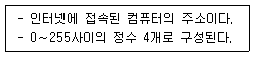
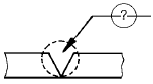
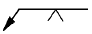
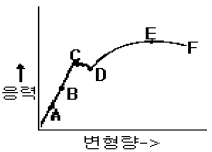

침투비파괴검사산업기사(구) (2002-03-10 기출문제)
1과목: 침투탐상시험원리
1. 자분탐상검사에 대한 설명으로 잘못된 것은?
- 표면결함이 존재하면 자속의 일부가 외부공간으로 누설된다.
- 자분탐상검사법은 결함의 길이, 형상, 깊이에 대한 정보를 정확히 알 수 있다.
- 철강재료의 투자율은 비자성체에 비해 상당히 크다.
- 누설자속탐상검사법은 누설자속밀도를 전기신호로 변화시켜 결함을 평가한다.
(정답률: 알수없음)

2. 고감도 형광침투제의 특성을 바르게 설명한 것은?
- 색채 대비용 침투제에 비해 흐릿한 자연광에서도 감도가 높아야 한다.
- 암실에서보다 흐릿한 자연광 밑에서 그 감도가 높아야 한다.
- 보통의 형광침투제보다 감도가 높아야 하지만 자연광 밑에서는 사용이 불가능하다.
- 색채 대비용 침투제에 비해 흐릿한 자연광에서는 감도가 낮아야 한다.
(정답률: 알수없음)
3. 침투액의 물리적 성질 중, 침투 성능의 우수성을 결정하는데 중요한 두가지 성질은?
- 중력 및 적심성
- 적심성 및 표면장력
- 밀도 및 적심성
- 표면장력 및 탄성력
(정답률: 알수없음)
4. 유화제의 적용 시간을 결정하는데 주로 영향을 미치는 요소는?
- 재질
- 검사하고자 하는 결함
- 검사품의 용도
- 표면의 거칠기
(정답률: 알수없음)
5. 수세성 형광 침투제 및 건식 현상제를 사용하여 반거치식으로 침투탐상검사시 자외선등의 위치로 적당한 곳은?
- 침투제 적용단계에
- 세척단계에
- 건조단계에
- 현상제 적용 단계에
(정답률: 알수없음)
6. 침투탐상시험의 신뢰성을 유지하기 위한 조치사항이 아닌 것은?
- 사용 중인 탐상제의 점검을 정기적으로 시행한다.
- 투과도계를 이용하여 탐상결과의 신뢰성을 점검한다.
- 탐상제 구입시 기준 탐상제를 채취 보존한다.
- 자외선조사장치의 자외선강도를 정기적으로 점검한다
(정답률: 알수없음)
7. 다음 중 침투탐상시험의 장점이 아닌 것은?
- 모든 종류의 결함을 검출할 수 있다.
- 원리가 간단하며 상대적으로 이해하기가 쉽다.
- 적용이 간단하다.
- 검사체의 모양, 크기에 대한 제약조건은 거의 없다.
(정답률: 알수없음)
8. 수세성 침투제를 사용할 때 가장 주의해야 할 경우는?
- 침투시간은 수압에 따라 달리 적용한다.
- 과잉 세척을 하지 말아야 한다.
- 유화제를 과하게 적용시키지 않아야 한다.
- 과잉 침투제의 제거시 시험면의 배경이 안보이도록 완전히 세척이 되어야 한다.
(정답률: 알수없음)
9. 습식현상제 적용후 이에 대한 건조방법으로 다음 중 가장 우수한 것은?
- 흡수가 잘되는 타올로 표면을 살며시 문질러 현상제를 빨아낸다.
- 실내 온도 근처에서 천천히 건조되도록 방치해 둔다.
- 실내 온도에서 공기를 불어 넣어 급속히 건조시킨다.
- 62℃ ∼ 93℃의 순환 열풍으로 급속히 건조시킨다.
(정답률: 알수없음)
10. 침투제는 균열이나 갈라진 틈(Fissure)과 같은 미세한 개구부로 침투 및 흡출되는 액체의 성질을 이용한다. 이러한 성질은 무슨 현상에 기인하는 것인가?
- 포화 현상
- 모세관 현상
- 확장 현상
- 수적방지 현상
(정답률: 알수없음)
11. 침투탐상시험으로 나타나는 지시의 검출과 관찰에 관한 설명으로 옳지 않은 것은?
- 일반적으로 건식현상제를 적용하는 경우에는 현상제적용 직후부터 지시가 나타난다.
- 습식현상제를 적용하는 경우에는 현상제의 건조가 완료된 후부터 지시가 나타난다.
- 일반적으로 나타나는 지시는 시간이 경과함에 따라 어느 정도까지 형태가 변하고 점점 크게 나타난다.
- 관찰은 지시가 나타나기 시작한 직후에 수행해야 한다.
(정답률: 알수없음)
12. 침투탐상시험시 다음 중 건식 현상제보다 습식 현상제를 선택하는 것이 탐상목적에 적합한 시험체는?
- 결함표면이 닫힌 거친 주물
- 다듬질한 톱니바퀴와 이형(異形) 부분
- 평평하고 매끄러운 표면의 시험체
- 습식 현상제는 어느 부분에도 사용할 수 없다.
(정답률: 알수없음)
13. 침투제의 성능을 결정하는 두가지 중요한 특성 중에서 적심성이 의미하는 것은?
- 접촉각으로 측정하며 표면장력과는 무관하다.
- 점성의 기능으로서 표면장력이 감소할수록 커진다.
- 접촉각으로 측정하며 표면장력이 증가할수록 커진다.
- 표면장력으로 측정하며 접촉각이 감소할수록 커진다.
(정답률: 알수없음)
14. 형광침투탐상법에 비하여 염색침투탐상법의 장점 설명으로 옳은 것은?
- 자외선등이 필요 없다.
- 형광침투탐상법보다 감도가 더 예민하다.
- 형광침투탐상법보다 침투성이 우수하다.
- 염색 침투탐상법은 독성이 없고 형광 침투법은 독성이 있다.
(정답률: 알수없음)
15. 후유화성 형광침투탐상시험에서 유화제의 적용시기에 대한 설명 중 올바른 것은?
- 침투제를 적용하기 전에
- 수세 작업후에
- 침투시간이 경과한 후에
- 현상시간이 경과한 후에
(정답률: 알수없음)
16. 후유화성 형광법을 사용하여 탐상면에 존재하는 미세하고 긁힘자국 같은 불연속의 검출시 유화 시간은 중요하게 처리되어야 하는데, 이 때의 유화시간으로 다음 중 적당한 것은?
- 10초
- 5초
- 2-3초
- 실험에 의해 구한다.
(정답률: 알수없음)
17. 침투탐상검사에 앞서 유기성 물질의 전처리 세척방법으로 가장 효과적인 방법은?
- 증기탈지
- 알칼리세척
- 산세척
- 청정제 처리
(정답률: 알수없음)
18. 세척처리는 침투탐상시험 조작순서중 가장 경험을 필요로 하는 중요한 요소이다. 세척 부족이 원인이 되어 일어나는 현상에 관해서 옳게 서술한 것은?
- 결함지시모양의 식별이 곤란해진다.
- 현상처리가 곤란해진다.
- 유화처리가 곤란해진다.
- 후처리가 곤란해진다.
(정답률: 알수없음)
19. 방사선투과시험과 침투탐상시험을 비교할 때 침투탐상시험의 장점이 아닌 것은?
- 표면 개구 결함 검출 가능
- 내부 결함 검출 가능
- 전면을 100% 시험할 수 있음
- 시험결과를 빠르게 얻을 수 있음
(정답률: 알수없음)
20. 다음 중 염색침투제와 비교할 때 형광침투제의 장점은?
- 관찰시 밝은 곳에서 할 수 있다.
- 작은 불연속의 검출이 용이하다.
- 물을 사용하는 개소에서 유리하다.
- 불연속이 오염될 경우 감도가 떨어진다.
(정답률: 알수없음)
2과목: 침투탐상검사
21. 다음 중 침투탐상시험으로 탐상이 가능한 결함은?
- 표면에 열린 결함
- 재질 내부 결함
- 재질 내부 혼입
- 재질 내부 기공
(정답률: 알수없음)
22. 비수세성 염색침투제를 시험체 표면으로부터 제거하는 가장 일반적인 방법은?
- 용제에 침지시킨다.
- 용제를 스프레이 한다.
- 용제를 천에 묻쳐 직접 닦는다.
- 침투제를 불어낸다
(정답률: 알수없음)
23. 용접부의 침투탐상시험시 전처리할 때 일반적으로 이용되는 방법이 아닌 것은?
- 솔질
- 증기세척
- 연삭
- 용제세척
(정답률: 알수없음)
24. 표면이 거친 강주물품의 검사에 적당한 침투탐상시험은?
- 수세법
- 유화제법
- 용제법
- 무현상법
(정답률: 알수없음)
25. 가장 널리 사용되고 있는 침투제의 일반적인 비중은?
- 약 0.5
- 약 1.0
- 약 1.5
- 약 2.0
(정답률: 알수없음)
26. 침투탐상시험시 지시의 길이가 5mm, 폭이 3mm인 관련지시가 관찰되었다면 이 지시의 분류로 가장 적당한 것은?
- 분산지시
- 군집지시
- 원형지시
- 선형지시
(정답률: 알수없음)
27. 성능이 우수한 침투제의 물리적 특성으로 옳은 것은?
- 인화점이 낮아야 한다.
- 점성이 커야 한다.
- 표면장력이 커야 한다.
- 접촉각이 작아야 한다.
(정답률: 알수없음)
28. 좋은 침투액의 조건이 아닌 것은?
- 대단히 미세하고 열려진 틈에 빨리 침투할 수 있어야한다.
- 비교적 거칠게 열려진 틈일지라도 남아 있어야 한다.
- 시험 후 표면으로부터 쉽게 제거되어야 한다.
- 시험 후 빨리 증발해야 한다.
(정답률: 알수없음)
29. 에어로졸 캔의 탐상제는 온도가 매우 낮으면 탐상제의 분사상태가 나빠진다. 이 경우 처리 방법으로 적당한 것은?
- 시험면을 가열한 후 탐상제를 적용한다.
- 불에 가까이 대고 달군다.
- 캔을 30℃ 정도의 물로 데운다.
- 탐상제의 성능저하가 예상되므로 무조건 폐기한다.
(정답률: 알수없음)
30. 용접부를 침투탐상검사할 때 나타날 수 있는 결함지시 형태를 잘 설명한 것은?
- 언더컷에 의한 넓고 희미한 지시
- 오버랩에 의한 원형 지시
- 크레이터 균열에 의한 넓고 희미한 지시
- 기공에 의한 선형지시
(정답률: 알수없음)
31. 가스터빈 블레이드(Blade)의 미세한 결함 검출에 가장 효과적인 검사방법은?
- 수세성 형광 침투탐상검사
- 용제제거성 염색 침투탐상검사
- 용제제거성 형광 침투탐상검사
- 후유화성 형광 침투탐상검사
(정답률: 알수없음)
32. 침투탐상에 사용되는 전처리용액 중 인화점(Flash Point)이 가장 낮은 것은?
- 케로신(Kerosene)
- 에탄올(Ethanol)
- 아세톤(Acetone)
- 톨루엔(Toluene)
(정답률: 알수없음)
33. 침투탐상시험에 대한 다음 설명 중 틀린 것은?
- 후유화성과 수세성은 동일 검사물에 사용해서는 안된다.
- 다른 제조회사의 제품을 혼용해서는 안된다.
- 앞선 시험의 찌꺼기가 남아있는 검사물에 다른 형의 침투제로 재시험하면 검사감도가 낮아진다.
- 염색침투제 찌꺼기가 남아있는 시험체는 형광침투탐상시험법으로 재시험해도 좋다.
(정답률: 알수없음)
34. 균열이 있는 비교시험편의 사용용도와 관련하여 잘못 서술된 것은?
- 필요시마다 나타낼 수 있는 균열의 표준크기를 설정하기 위하여
- 서로 다른 두개의 침투제의 상대적인 감도를 비교하기 위하여
- 오염에 따른 형광 침투제의 성능이 저하되었는가를 알아보기 위하여
- 과잉침투제를 제거할 경우에 필요한 세척방법 및 정도를 알기 위하여
(정답률: 알수없음)
35. 수세성 염색침투탐상시험법의 단점은?
- 세척 조작이 어렵다.
- 표면이 거친 검사품의 탐상에는 부적합하다.
- 전원이 필요하다.
- 검출 감도가 낮아 미세한 결함의 검출이 어렵다.
(정답률: 알수없음)
36. 침투탐상시험법 중 유화제가 필요한 시험은?
- 형광침투탐상 수세법
- 형광침투탐상 유화제법
- 염색침투탐상 수세법
- 염색침투탐상 용제법
(정답률: 알수없음)
37. 다양한 검사체에 존재하는 불연속의 형태에 따라서 침투시간이 다르다. 일반적으로 미세하고 조밀한 균열이 예상될 때의 침투시간은?
- 크고 얕은 불연속보다 짧은 침투시간이 요구된다.
- 크고 얕은 불연속보다 긴 침투시간이 요구된다.
- 크고 얕은 불연속과 같은 침투시간이 요구된다.
- 침투시간에 관계없이 부식처리 후 발견할 수 있다.
(정답률: 알수없음)
38. 침투탐상시험시 습식현상제 적용 방법이 가장 부적절한 것은?
- 전표면에 현상제의 두꺼운 피막을 입힌다.
- 검사체 표면 위에 현상제를 얇게 도포한다.
- 브러쉬를 사용한다.
- 분무기를 사용한다.
(정답률: 알수없음)
39. 다음 중 주조품에서 발견될 수 있는 결함은?
- 라미네이션(Lamination)
- 백점(Flakes)
- 탕계(Cold Shut)
- 단조터짐(Burst)
(정답률: 알수없음)
40. 염색침투탐상시험에서는 몇 Lux이상의 밝기에서 관찰해야 하는가?
- 150
- 250
- 350
- 450
(정답률: 알수없음)
3과목: 침투탐상관련규격
41. 거리에 관계없이 자료발생 즉시 처리하는 양방향 통신 기능을 가진 정보처리 방식은?
- 온라인(On-Line) 처리
- 일괄(Batch) 처리
- 원격 일괄(Remote batch) 처리
- 분산 자료 처리(distributed data processing)
(정답률: 알수없음)
42. KS B 0816에서 두개의 선상결함지시모양이 떨어져서 나타났지만 연장선상에 나란히 있을 때에는 상호거리가 어떤 경우에 한개의 결함으로 보는가?
- 5mm 이하인 때
- 4mm 이하인 때
- 2mm 이하인 때
- 긴쪽 결함지시모양 길이의 어느 것 보다도 길 때
(정답률: 알수없음)
43. Window 환경에서 공유된 폴더를 사용하기 위한 방법이 올바른 순서로 나열된 것은?
- 네트워크 환경 → 컴퓨터 아이콘 → 공유 폴더 → 암호입력
- 컴퓨터 아이콘 → 네트워크 환경 → 암호 입력 → 공유폴더
- 네트워크 환경 → 암호 입력 → 컴퓨터 아이콘 → 공유폴더
- 네트워크 환경 → 암호 입력 → 공유 폴더 → 컴퓨터 아이콘
(정답률: 알수없음)
44. ASME Sec.Ⅲ, Div.1, Subsection NB에서 규정한 침투탐상지시에 대한 기술이다. 잘못 기술된 것은?
- 균열은 불합격으로 한다.
- 선형지시는 불합격으로 한다.
- 1/8 인치를 초과하는 원형지시는 불합격으로 한다.
- 동일 선상으로 1/16인치 분리된 4개 이상의 원형지시는 불합격으로 한다.
(정답률: 알수없음)
45. KS B 0816에 따르면 시험기록을 작성할 때 시험기술자의 기록은?
- 성명만 기재한다.
- 성명 및 취득한 자격을 기재한다.
- 성명 및 자격증 번호를 기재한다.
- 성명 및 생년월일을 기재한다.
(정답률: 알수없음)
46. ASME 규격에 따라 원자력발전 부품에 형광침투탐상시험적용시 자외선등의 강도는 몇 시간마다 점검되어야 하는가?
- 3시간
- 4시간
- 6시간
- 8시간
(정답률: 알수없음)
47. KS W 0914규격에 따라 침투탐상시험을 수행할 때 사용중인 탱크내에 있는 침투액은 표준 침투액과 비교하여 감도를 확인, 점검하여야 한다. 다음 중 점검 주기로써 맞는 것은? (단, 탱크내에 침투액을 보충할 필요가 없는 경우)
- 1주일
- 2주일
- 1개월
- 2개월
(정답률: 알수없음)
48. MIL 규격에서 페인트는 화공약품을 사용하여 제거하여야 하는데 산이나 알칼리 성분이 포함되어 있지 않은 용제를 사용하여 제거하여야 하는 경우는?
- 열처리를 하여 인장 강도가 16,870kg/cm2이상인 강재
- 움직일수가 없어서 화공약품 제거제로 처리한 후 250℃ 온도까지 열처리 작업을 수행하기가 곤란한 강재
- 미국알루미늄협회 표준기호 7000계열에 해당되는 저강도 알루미늄 부품으로 지속적인 인장력을 받는 부품
- 산소공존법에 의하여 침투탐상시험을 수행할 경우
(정답률: 알수없음)
49. KS B 0816에 따라 침투탐상시험을 실시할 때 현상처리시 온도는 보통 몇 도 이하로 규정하고 있는가?
- 50℃
- 70℃
- 95℃
- 125℃
(정답률: 알수없음)
50. 아래 내용은 무엇에 대한 설명인가?

- 도메인 이름
- DNS
- LAN
- IP address
(정답률: 알수없음)
51. 원자력발전소 부품에 대하여 침투탐상시험을 행할 때 ASME Sec.V 중 어느 부분을 참고하여야 하는가?
- Art. 2
- Art. 4
- Art. 6
- Art. 8
(정답률: 알수없음)
52. KS B 0816에 의한 B형 대비시험편의 종류와 시험편내의 도금 갈라짐의 나비 값(목표값)이 바르게 연결된 것은?
- PT-B10 : 0.5㎛
- PT-B20 : 1.5㎛
- PT-B30 : 2.0㎛
- PT-B50 : 5.0㎛
(정답률: 알수없음)
53. ASTM code에서 침투탐상시험에 사용되는 용제 세척제의 성분 함량을 제한하는 원소로 맞는 것은?
- 염소(Cl)
- 붕소(B)
- 탄소(C)
- 수소(H)
(정답률: 알수없음)
54. KS B 0816에 의해 침투탐상시험을 할 때 원칙적으로 제한하는 유화시간은? (단, 기름베이스 유화제로서 염색침투액인 경우)
- 30초 이내
- 1분 이내
- 3분 이내
- 5분 이내
(정답률: 알수없음)
55. ASME Sec.V에서 침투탐상시험에 관하여 수록한 규격은?
- SE - 94
- SE - 142
- SE - 165
- SE - 446
(정답률: 알수없음)
56. KS B 0816에 따른 침투탐상시험에서 다음 중 유화장치와 자외선 조사장치가 필요한 시험법은?
- FA-D
- FB-W
- FC-D
- VC-W
(정답률: 알수없음)
57. KS B 0816에서 규정한 침투지시 모양의 관찰시간은?
- 현상제 적용 전 7∼60분 사이
- 현상제 적용 후 7∼60분 사이
- 건조처리 적용 전 7∼60분 사이
- 건조처리 적용 후 7∼60분 사이
(정답률: 알수없음)
58. KS B 0816에 규정된 건조처리 과정중 맞는 것은?
- 건조온도는 원칙으로 최소 90℃로 한다.
- 건식 또는 속건식 현상제를 사용할 경우, 세척액으로 세척할시 가열건조가 필요하다.
- 건식 또는 속건식 현상제를 사용할 경우에는 물세척시 건조온도는 원칙으로 최고 52℃로 한다.
- 건식 또는 속건식 현상제를 사용할 경우에 있어서 세척액으로 세척할시 자연 건조한다.
(정답률: 알수없음)
59. ASME Code에 의해 용접부위를 침투탐상시험할 때 용접선을 중심으로 양측으로 적어도 어느 정도까지 전처리를 하여야 하는가?
- 12.7mm(0.5 inch)
- 25.4mm(1 inch)
- 50.8mm(2.0 inch)
- 38.1mm(1.5 inch)
(정답률: 알수없음)
60. 윈도우에서 선택된 폴더나 파일의 정보 및 속성을 볼 수 있는 명령은?
- 데스크 톱
- 아이콘 정렬
- 새로 만들기
- 등록 정보
(정답률: 알수없음)
4과목: 금속재료 및 용접일반
61. 비정질합금의 제조법이 아닌 것은?
- 화학도금
- 금속가스의 증착
- 냉간가공법
- 액체급냉법
(정답률: 알수없음)
62. 원판형 전극사이에 용접물을 끼워 전극에 압력을 주면서 전극을 회전시켜 모재를 이동하면서 용접하는 방법으로 주로 기밀, 유밀을 필요로하는 이음에 적용되는 전기저항용접법은?
- 심 용접법
- 플래시 용접법
- 업셋 용접법
- 테르밋 용접법
(정답률: 알수없음)
63. 서브머지드 아크 용접에서 사용되는 다전극 방식이 아닌 것은?
- 직병렬식
- 텐덤식
- 횡병렬식
- 횡직렬식
(정답률: 알수없음)
64. 용해 아세틸렌을 충전한 후 용기 전체 무게가 62.5[kgf] 이었는데, B형 토치의 200번 팁으로 표준불꽃 상태에서 가스용접 후 아세틸렌 용기를 달아보았더니 무게가 60.5[kgf]이었다면 가스용접을 한 시간은 약 얼마인가? (단, 작업조건은 15℃, 1기압으로 가정한다.)
- 약 6시간
- 약 9시간
- 약 12시간
- 약 15시간
(정답률: 알수없음)
65. 보기와 같은 용접홈 모양과 용접방향에 대한 (?) 부분에 도시될 용접기호로 가장 적합한 것은?


(정답률: 알수없음)
66. 베어링에 사용되는 구리합금의 대표적인 켈밋(kelmet) 성분은?
- 70% Cu - 30% Pb합금
- 70% Pb - 30% Sn합금
- 60% Cu - 40% Zn합금
- 60% Pb - 40% Zn합금
(정답률: 알수없음)
67. 탄소강 중 망간(Mn)의 영향을 바르게 설명한 것은?
- 강의 담금질 효과를 증대시켜 경화능이 커진다.
- 강의 점성을 저하시키고 가공성을 해친다.
- 연신율과 경도를 감소 시킨다.
- 주조성을 나쁘게 하고 고온에서 결정입의 성장을 촉진 시킨다.
(정답률: 알수없음)
68. 다음 중에서 용접 지그(Jig)의 사용목적이 아닌 것은?
- 용접자세를 편리하게 한다.
- 용접이 곤란한 재료를 가능하도록 한다.
- 대량 생산을 하기 위하여 사용한다.
- 제품의 정밀도를 향상 시켜 준다.
(정답률: 알수없음)
69. 용접결함 중 치수상의 결함인 것은?
- 융합불량
- 변형
- 용접균열
- 기공
(정답률: 알수없음)
70. 응력-변형선도에서 최대하중점을 표시한 것은?

- B
- C
- D
- E
(정답률: 알수없음)
71. 금속표면에 초경합금 스텔라이트 등의 특수합금을 용착시키는 방전경화법은?
- Chromizing
- Hard facing
- Calorizing
- Sheradizing
(정답률: 알수없음)
72. 다음 중 점용접의 3대 요소가 아닌 것은?
- 전극의 재질
- 용접 전류
- 통전 시간
- 가압력
(정답률: 알수없음)
73. 철광석을 용광로 속에서 코크스로 환원시켜 제련시킨 것은?
- 탄소강
- 순철
- 강철
- 용선
(정답률: 알수없음)
74. 전위(dislocation)의 종류에 속하지 않는 것은?
- 나사전위
- 칼날전위
- 절단전위
- 혼합전위
(정답률: 알수없음)
75. 소결기계 재료에 대한 설명이 옳지 못한 것은?
- 재질은 철계분말이 주체이고 Cu, Sn, Pb 등의 분말을 배합한다.
- 배합된 재료는 산화성 분위기 중에서 연속식 전기로에서 소결한다.
- 소결된 부품은 사이징, 코이닝 공정에서 정확한 치수를 맞춘다.
- 성형압의 증가에 따라 밀도, 강도 및 연신율이 함께 증가한다.
(정답률: 알수없음)
76. 황동의 가공제품에서 나타나는 자연균열의 발생에 대한방지책은?
- 탄산가스나 암모니아 분위기속에 보관한다.
- 습기 또는 수은속에 보관한다.
- 약 200℃에서 응력제거 풀림처리한다.
- 재결정온도 이상에서 담금질처리한다.
(정답률: 알수없음)
77. 용접봉의 종류 중 내균열성이 가장 좋은 용접봉은?
- 저수소계
- 고산화철계
- 고셀루로우즈계
- 일미나이트계
(정답률: 알수없음)
78. 피복제에 습기가 있는 상태로 용접했을 경우 많이 일어날 수 있는 현상으로 다음 중 가장 중요한 것은?
- 오버랩 현상이 일어난다.
- 크레이터가 생긴다.
- 언더컷이 생긴다.
- 기공이 생긴다.
(정답률: 알수없음)
79. 다음 중 가스 압접법의 특징이 아닌 것은?
- 압접 소요시간이 짧다.
- 원리적으로 전력이 필요없다.
- 용접부는 용융하지 않고 접합된다.
- 가스 압접은 매우 숙련된 작업자가 필요하다.
(정답률: 알수없음)
80. FCC 결정구조를 갖는 금속에서 원자의 충전율(%)은?
- 36
- 68
- 74
- 80
(정답률: 알수없음)